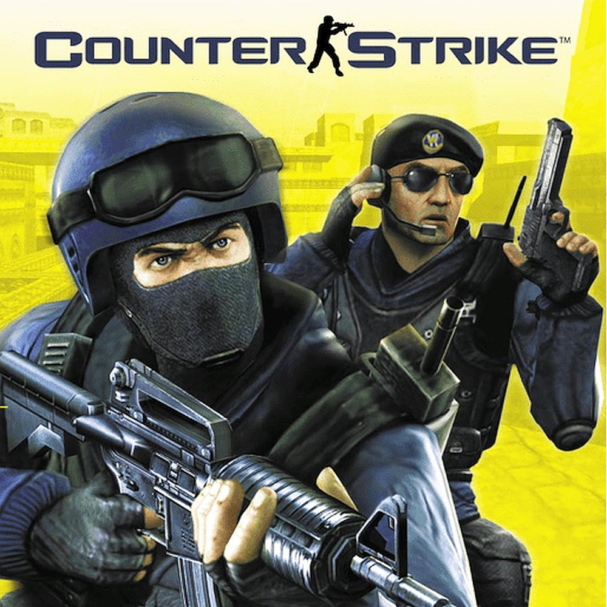

Counter Strike - Pelit
Esittely
Counter-Strike on taktinen ensimmäisen persoonan ammuntapelisarja, jossa kaksi joukkuetta – terroristit ja erikoisjoukot – taistelevat toisiaan vastaan kierrospohjaisissa otteluissa.
Sarja alkoi vuonna 1999, kun Counter-Strike julkaistiin alun perin modina pelille Half-Life. Pelin kehitti myöhemmin Valve Corporation, ja siitä tuli nopeasti yksi maailman suosituimmista moninpeleistä.
